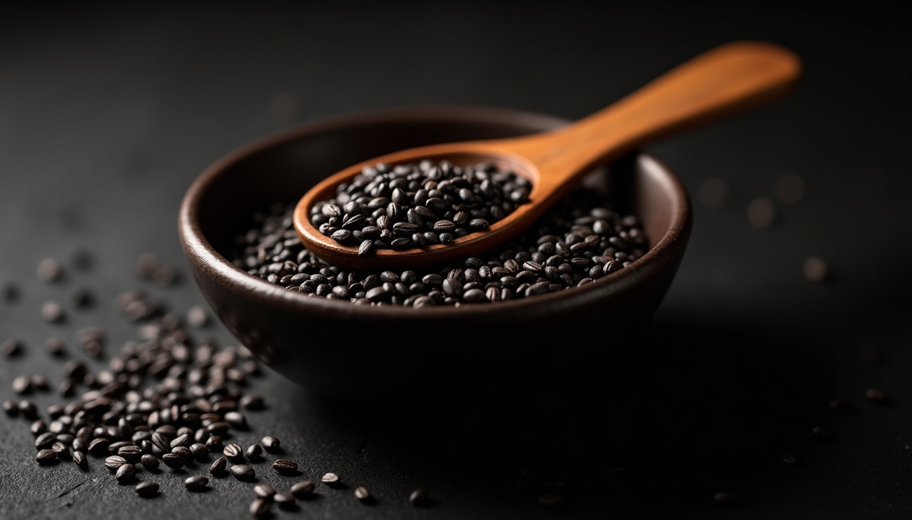

You've tried the obvious things. Earlier bedtimes. More sleep. Cutting the wine. Vitamins. A brief, enthusiastic return to the gym that made it worse. And yet the fatigue persists — not the ordinary tiredness that a good night's sleep fixes, but something flatter and more insistent. A heaviness that's there when you wake up and accumulates through the day.
This is perimenopause fatigue. And the reason nothing standard has worked is that it isn't standard fatigue — it isn't a sleep problem, a stress problem, or an iron problem. It's an energy production problem at the CELLULAR level, driven by a hormonal shift that most fatigue advice isn't designed to address. I've seen this pattern more times than I can count. The women who stay stuck are the ones trying to solve a mitochondrial problem with more sleep.
Why This Fatigue Is Biologically Different
Ordinary tiredness has a clear cause and a clear fix. Under-slept — sleep more. Over-exerted — rest. The signal and the remedy match. This is the thing most fatigue advice completely misses.
Perimenopause fatigue doesn't respond to these inputs in the expected way. Sleep more and you may feel more tired. Rest more and the heaviness deepens. Exercise intensely and you're wrecked for two days. This is the defining characteristic — the normal levers don't pull.
The reason is that perimenopause fatigue originates upstream of sleep and activity. It's produced by a change in how your cells generate energy, not just how much energy they're asked to produce. The distinction matters enormously for what you do about it.
The Mitochondrial Factor: Oestrogen and Energy Production
Oestrogen isn't just a reproductive hormone. It's a direct regulator of mitochondrial function — the process your cells use to convert nutrients into ATP, the molecule that powers everything from muscle contraction to cognitive function. Through both nuclear receptor signalling and non-genomic pathways, oestrogen upregulates the enzymes responsible for oxidative phosphorylation and protects mitochondria from oxidative stress.
As oestrogen levels decline and fluctuate during perimenopause, mitochondrial efficiency drops in parallel. Your cells are producing less ATP from the same resources. The machinery is running — just not at full output. This is why perimenopause fatigue has that quality of cellular heaviness. It isn't a signal you need MORE rest. It's a signal your energy infrastructure is running at REDUCED CAPACITY. Rest alone won't fix a production problem.
There's a second effect: oestrogen normally suppresses oxidative stress in mitochondria by activating antioxidant enzymes including SOD2 (Superoxide Dismutase 2). Without adequate oestrogen, oxidative damage in mitochondria accumulates. This doesn't just reduce energy output — it accelerates the fatigue signal itself. The brain receives more oxidative stress markers, producing the subjective experience of exhaustion even when you've physically done very little.
"Oestrogen is a direct regulator of mitochondrial energy production. When it declines, your cells generate less ATP — not because they're doing more, but because the machinery is running at reduced capacity."
The Cortisol-Crash Pattern
The second mechanism compounds the first. During perimenopause, the HPA axis — the hormonal system that regulates cortisol — becomes dysregulated. Cortisol output becomes less predictable: too high at the wrong times (3am, see the companion article on perimenopause insomnia), and crashing at the wrong times — typically mid to late afternoon.
Cortisol has a direct effect on blood sugar regulation. When cortisol drops, blood sugar often drops with it. The 3pm crash that many perimenopausal women experience isn't just psychological — it's a blood sugar and cortisol event compounding on top of the underlying mitochondrial energy deficit. Two mechanisms hitting simultaneously.
This is also why high-intensity exercise — the conventional prescription for fatigue — often backfires completely during perimenopause. Intense exercise spikes cortisol. In a normally functioning HPA axis, this is tolerable and beneficial. In a dysregulated perimenopausal HPA axis, the cortisol spike can push the system into a deeper trough, leaving you more exhausted in the 24–48 hours after a hard workout than you were before it.
The Thyroid Connection Nobody Mentions
There's a third variable that is frequently overlooked because it requires a blood test to detect. Oestrogen fluctuation during perimenopause affects thyroid binding globulin (TBG) — a protein that carries thyroid hormones through the bloodstream. When TBG levels change, the amount of free, active thyroid hormone available to your cells can drop even if your thyroid is producing adequate amounts.
A standard thyroid test (TSH) can come back normal while your available thyroid hormone — the fraction your cells can actually use — is functionally low. The symptoms are indistinguishable from perimenopause fatigue: exhaustion, weight changes, brain fog, difficulty regulating temperature. This is why perimenopause and hypothyroidism are so frequently misdiagnosed as each other, and why both can coexist without either being caught by a single standard blood panel.
If your fatigue is severe and unresponsive to the interventions below, ask your GP specifically for Free T3 and Free T4 alongside TSH — not just TSH in isolation. This is a reasonable clinical ask, not an overstep.
기 (Gi) and the Korean Framework for Energy Depletion
Korean medicine has a framework for this pattern that predates the mitochondrial research by centuries. I grew up with 보양식 (boyangshik) — energy-restoring foods — as a matter of course. When women in my family were exhausted, no one suggested they push through it. The prescription was food, warmth, and rest. It wasn't considered weakness. It was considered sense. 기 (gi) — vital energy — is understood to have finite reserves that can be depleted by specific conditions: hormonal transition, chronic stress, irregular eating, insufficient sleep, and emotional suppression. The menopausal transition is explicitly described as a period of 기 vulnerability.
The clinical response in Korean medicine is 보양 (boyang) — replenishment through food and rest — rather than exertion through the depletion. This is the philosophical opposite of "push through it with more exercise." It prioritises restoration over output during the transition period, allowing the system to rebuild rather than drawing further on depleted reserves.
Specific 보양식 (boyangshik) — energy-restoring foods — used during perimenopause:
Black sesame (흑임자, heukimja). Rich in lignans that modulate oestrogen activity and high in healthy fats that support mitochondrial membrane function. In Korean tradition, ground black sesame mixed with warm water or added to congee is a classic restorative food for women in hormonal transition. The fat content supports fat-soluble vitamin absorption, including Vitamin D — frequently deficient in perimenopausal women.

Amazon Associate links — I earn a small commission at no extra cost to you.
Bone broth (사골국, sagol-guk). A Korean dietary staple with specific relevance to perimenopause fatigue: high in glycine, which supports mitochondrial function and reduces oxidative stress markers. Korean families have long given sagol-guk to women recovering from childbirth and transitioning through menopause for exactly this restorative function.
Black beans (검은콩, geomeun-kong). Contain phytoestrogens (isoflavones) that partially compensate for declining oestrogen activity, plus high magnesium content which supports ATP synthesis directly. Boiled and eaten warm, not raw or processed.
The Korean dietary principle across all three: warm, cooked, easily digested foods. Raw and cold foods are understood to tax digestive 기 — energy your body needs to spend on digestion rather than restoration. During a period of 기 vulnerability, the load matters. This isn't mysticism. It's resource allocation.
What Actually Rebuilds Energy During Perimenopause
The goal is mitochondrial support and HPA axis stabilisation — not pushing through the depletion. These are the interventions with the most direct mechanistic support.
Movement: shorter, lower-intensity, daily. Walking 30–40 minutes daily stimulates mitochondrial biogenesis without spiking cortisol. Resistance training 2–3x per week at moderate intensity supports muscle mass and insulin sensitivity. Avoid high-intensity training during the acute fatigue phase — it adds cortisol load on top of the existing HPA dysregulation.
Blood sugar stability at every meal. Protein + fat + fibre at each meal slows glucose absorption and prevents the cortisol-mediated crash. Skip meals or eat high-carbohydrate breakfasts and the 3pm crash is almost guaranteed. This is not a diet — it's blood sugar architecture.
Eating within a 10-hour window. Time-restricted eating supports circadian alignment of glucose metabolism and reduces the overnight metabolic load that compounds morning fatigue. First meal no earlier than 8am, last meal by 6–7pm.
Magnesium glycinate: 300–400mg before bed. Magnesium is a direct cofactor in ATP synthesis — it's required for mitochondria to produce energy. Deficiency is extremely common in perimenopausal women. Glycinate form is best tolerated and has an additional mild sedative effect via GABA pathways.
Morning light, first 30 minutes of waking. Cortisol's morning rise — the Cortisol Awakening Response — is the body's primary energy-priming signal. Morning light exposure strengthens and correctly times this response. Weak or absent morning light produces a blunted CAR and flat energy all day. This is free. It is consistently underrated.
보양식 in the evening. Warm, cooked foods. Bone broth with dinner. Black sesame in the morning. Avoid raw salads and cold smoothies as your primary evening meal during this transition — the digestive energy cost is real.
Alcohol: stop. Alcohol suppresses mitochondrial function directly, disrupts cortisol timing, and fragments sleep — all three of the primary mechanisms driving perimenopause fatigue, hit simultaneously by a single evening glass. There is no safe amount during an active fatigue period.
The framework is 보양 — replenishment. Not pushing, not optimising output, not adding more stimulation. Rebuilding the infrastructure so that energy can be generated again. This is a period that requires restoration, not forcing. Your body is not broken. It is reorganising. Give it the conditions to do that.
Frequently Asked Questions
Because perimenopause fatigue isn't primarily a sleep problem — it's an energy production problem. Oestrogen directly supports mitochondrial function, the process your cells use to generate ATP. As oestrogen declines, mitochondrial efficiency drops. You can sleep adequately and still feel exhausted because the fatigue is cellular, not just a sleep debt. Sleep is necessary but not sufficient when the underlying machinery is running at reduced output.
No, though they share symptoms and are frequently misdiagnosed as each other. Perimenopause fatigue has a specific hormonal and mitochondrial basis. Depression involves different neurochemical pathways, though oestrogen fluctuation can trigger or worsen both simultaneously. If you're experiencing persistent low mood alongside fatigue, both possibilities are worth investigating with a GP — they're not mutually exclusive, and one diagnosis doesn't rule out the other.
Yes — but not at high intensity. High-intensity exercise spikes cortisol, which compounds the HPA dysregulation already driving perimenopausal fatigue. The research supports shorter, lower-intensity movement: 30–40 minutes of walking, moderate resistance training, yoga. Daily moderate movement stimulates mitochondrial biogenesis without adding cortisol load. Think Korean grandma energy: always moving, never destroying herself.
For most women, the most severe fatigue corresponds to the active transition — the 2–7 years when hormones are fluctuating most unpredictably. Once oestrogen and progesterone reach a new stable (lower) baseline after the final period, mitochondrial function tends to adapt and energy often returns — though usually with a different character than pre-perimenopause energy. Interventions during the transition meaningfully reduce both severity and duration.
The 3am Protocol
Ready to fix your sleep architecture?
28 days of circadian resets using Korean saenghwal practices and sleep science. No melatonin required.
Learn more →Some links in this article are Amazon Associate links. If you purchase through them, I earn a small commission at no extra cost to you. I only link products I'd genuinely recommend.